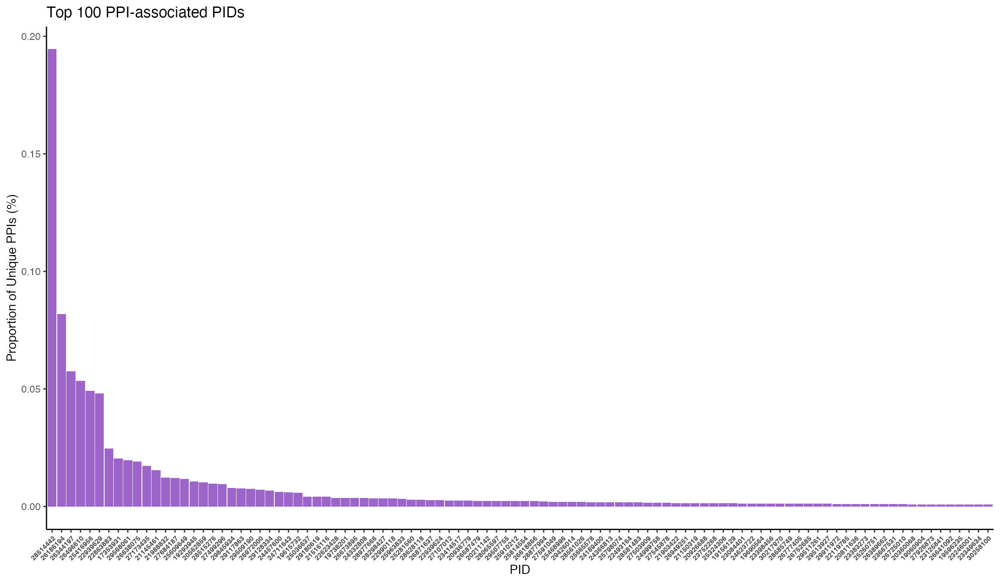
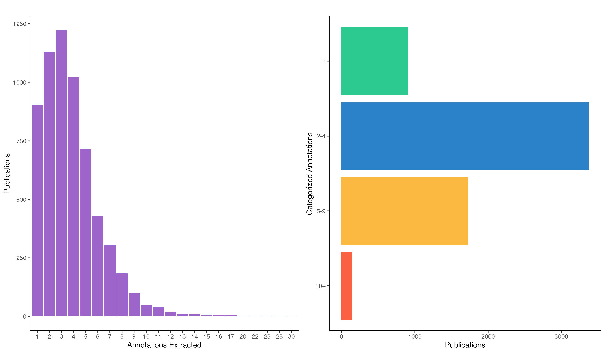
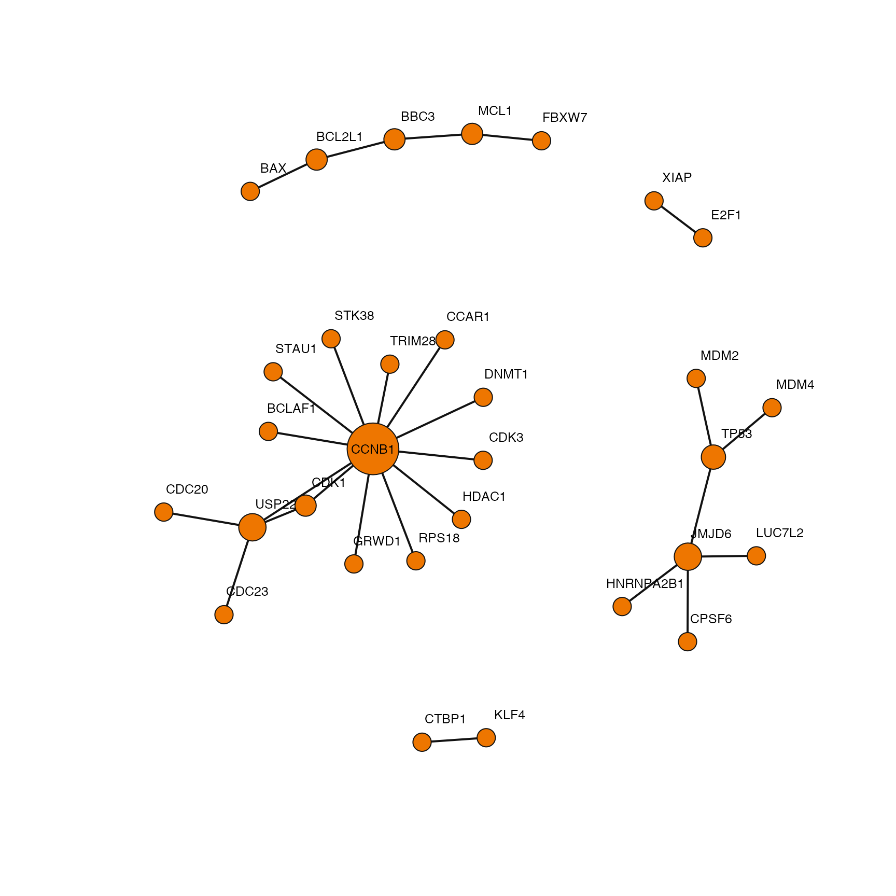

As a supporting dataset, we have generated information regarding how many PPIs a given publication (pid) is responsible for as well as the number of cell line annotations that were extracted from the text - which allows users to better assess the specificity of PPIs mapped to cell lines.
publications <- read.delim("data/v_1_00/Publications.txt")
Here you can see five cell lines were extracted from publication 28514442 while only a single cell line was extracted from publication 25416956.
head(publications)
pid n_ppi cell_names n_annotations
1 28514442 56297 MCF-10A,HEK293T,HeLa,HCT 116,MCF-10AT 5
2 26186194 23663 HEK293T,HeLa,SH-SY5Y,HeLa S3 4
3 26344197 16625 HeLa,Schneider 2,HCT 116,HEK293 4
4 26496610 15458 HeLa Kyoto 1
5 25416956 14233 HEK 1
6 22939629 13912 HeLa,HEK293,HeLa S3 3
specificity
1 5-9
2 2-4
3 2-4
4 1
5 1
6 2-4It is important to note that a large percentage of the interactions come from a single study. Here they present BioPlex 2.0, a high-throughpout method for expression and purification for proteins in HEK293T cells and employs robust affinity purification-mass spectrometry (AP-MS) to the interrogation of protein-protein interactions. They report 56297 unique PPIs. Users may want to filter out these PPIs if they want to remove non-specific PPIs purified from cell lines primarily used as efficient expression vectors such as HEK.
publication.info(28514442)
PMID: 28514442
Huttlin EL et. al. (2017) Nature
Architecture of the human interactome defines protein communities and disease networks.publications %>% dplyr::mutate(ppi_pct = n_ppi / sum(n_ppi)) %>% dplyr::arrange(desc(ppi_pct)) %>% dplyr::mutate(pid = factor(pid, levels=pid)) %>% head(100) %>% ggplot(aes(x=pid, y=ppi_pct)) + geom_bar(stat="identity", fill="#9d65c9") + labs(title="Top 100 PPI-associated PIDs", x="PID", y="Proportion of Unique PPIs (%)") + theme_classic() + theme(legend.position="none", axis.text.x=element_text(angle=45, hjust=1, size=6, face=2))

Each publication has a varying number of extracted annotations; therefore, we have binned them into four categories: publications with 1, 2-4, 5-9, or 10+ cell line annotations. Publications with a single annotation are likely to be very specific. While 2-4 and 5-9 are likely studies with multiple validation experiments performed in additional cell lines.
p1 <- table(publications$n_annotations) %>% data.frame() %>% magrittr::set_colnames(c("annotations", "freq")) %>% ggplot(aes(x=annotations, y=freq)) + geom_bar(stat="identity", fill="#9d65c9") + labs(title="", x="Annotations Extracted", y="Publications") + theme_classic() + theme(legend.position="none") p2 <- table(publications$specificity) %>% data.frame() %>% magrittr::set_colnames(c("category", "freq")) %>% dplyr::mutate(category = factor(category, levels=rev(c("1", "2-4", "5-9", "10+")))) %>% ggplot(aes(x=category, y=freq, fill=category)) + geom_bar(stat="identity") + coord_flip() + scale_fill_manual(values = c("1"="#2CC990", "2-4"="#2C82C9", "5-9"="#FCB941", "10+"="#FC6042")) + labs(title="", x="Categorized Annotations", y="Publications") + theme_classic() + theme(legend.position="none") ggarrange(p1, p2, ncol=2)

ppi <- data.ppi("data/v_1_00/PPI-Context.txt")
Here is a small example for filtering interactions based on the specificity of their reporting publication. First we isolate PPIs annotated with a given cell line and then filter again by publications with only a single annotation. Lastly we put the interactions into an undirected graph object so we can analyze them as a single network.
ig <- ppi %>% dplyr::filter(cell_name == "HCT 116") %>% dplyr::filter(pid %in% dplyr::filter(publications, specificity == "1")$pid) %>% dplyr::select(gene_a, gene_b) %>% magrittr::set_colnames(c("to", "from")) %>% igraph::graph_from_data_frame(directed=FALSE) %>% igraph::simplify() plot(ig, vertex.size=degree(ig)+5, vertex.frame.color="gray7", vertex.color="darkorange2", vertex.label.family="Helvetica", vertex.label.dist=ifelse(degree(ig) > 10, 0, 1.5), vertex.label.cex=0.8, vertex.label.color="black", edge.width=2, edge.color="gray7")
